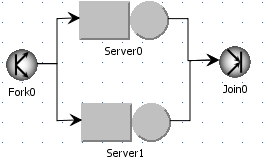
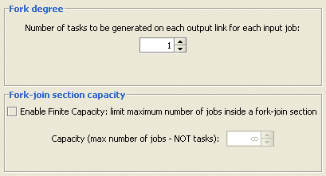
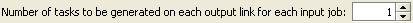
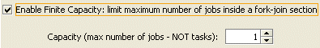

___________________
A JSIM Fork station is simply a station where jobs are split into tasks. No service is provided, therefore there is no service time specification. Tasks are then routed along the Fork station outgoing links.

Unlike classical queueing theory fork-join queues, a JSIM Fork station is not associated with a join station automatically. Any combination of server stations, finite regions, fork-join, routing stations, etc., is possibile after a Fork station. This feature allows the modeling of very general parallel behaviors, of which the traditional Fork-Join one is a special case. In JSIM the classical queueing theory Fork-Join queue behavior is obtained by connecting the Fork station to as many Server stations as the degree of parallelism requested, with one task per outgoing link. Each Server station is then connected to a Join station, where the job is recomposed.
A Fork station is characterized by the forking degree, i.e., the number of tasks routed on each one of its outgoing links, and the capacity, i.e., the maximum number of jobs that can be served by the station simultaneously. Therefore, the number of sibling tasks a job is split into is given by the product of the number of outgoing links from the Fork station times the forking degree. Note that a finite station capacity makes sense only when there is a join station downstream from the fork station that can recompose the split jobs. Otherwise, inconsistencies in the model and subsequent simulation error, such as out-of-memory, may occur. No automatic checks are available at the moment that can identify such critical conditions. Both the forking degree and the capacity are section parameters to be specified in the model. As an example, a Fork station with forking degree 1, connected to three Server stations, would split a job into 3 sibling tasks (this is a traditional Fork-Join like behavior). If no Join station is connected to any of the three Servers, a warning message is displayed since the model could quickly saturate due to the extra load (3 more jobs) created in addition to each job entering the Fork station.
Set or change the properties:
This station has two sections: fork and queue.
Station Name: name of Fork used in the model.
Fork Section:
In this section you can define the station forking degree, i.e., the number of tasks created for each job arriving at the fork station, and its capacity, i.e., the maximum number of of jobs that can be in a fork-join section (when a join is present):

Forking degree:it is the number of tasks that are routed on each outgoing link of the fork station. Therefore, each job is split into (forking degree)*(number of outgoing links) tasks. By default the forking degree is 1 and it can be modified using this form:

Capacity: it is the maximum number of jobs that can be served by a fork-jon sectionsimultaneously. It makes sense only if there is a join station matching the fork one. It can be finite, in which case once the limit is reached, jobs wait in the queue of the fork station. A job is removed from the queue and serviced (i.e., split into tasks) when a job is recomposed at the matching join station and leaves it. Capacity is defined using the form below, after checking the "Finite capacity..." box:

Queue Section:
The Queue section allows the specification of the queueing capacity (whether finite or infinite) and policy. Different classes may have different policies associated with them.
Capacity: a station can accept any customer and let them wait in quue, in which case its capacity is considered infinite, or it can only accept a finite number of customers. In this case its capactiy is finite, with a length to be specified.
Queue policy: it is the algorithm used to decide which customer to serve next. A variety of factors can contribute to the order in which customers are served, such as arrival order, priorities associated with a class, the amount of service already provided to customers, etc.
In JSIM queueing disciplines based on arrival order and priority are the only available, namely:
- FCFS: under the First Come First Served queueing discipline, customers are served in the order in which they arrive at the station. If the model is exported to MVA, the following constraint is enforced in the exported model. Since all customer classes must have the same average service time at a FCFS station, the total number of visits to the station (Vc,k) is adjusted in order to comply with the constraint and at the same time allow for distinct service demands (Dc,k).
- FCFS (Priority): under this policy, customers are ordered according to their arrival time but customers with higher priority jump ahead of customers with lower priority (conventionally a small priority number = low priority). Customers with the same priority are served FCFS.
- LCFS: under the Last Come First Served queueing discipline, an arriving job jumps ahead of the queue and will be served first, unless other jobs arrive before the one currently in service finishes. The LCFS discipline implemented in JSIM is not the preemptive-resume type.
- LCFS (Priority): under this policy, the next customer to be served is one with the highest priority (conventionally a small priority number = low priority), so an arriving customer can only jump ahead of the queue of the other jobs with the equal or smaller priority. Customers with the same priority are served LCFS.
Drop Rule: it is not active when infinite capacity is selected. For each class you can select a rule to apply when a job cannot enter the the station's queue since its capacity is exceeded, i.e., the queue is full. Please refer to this topic for detailed informations.